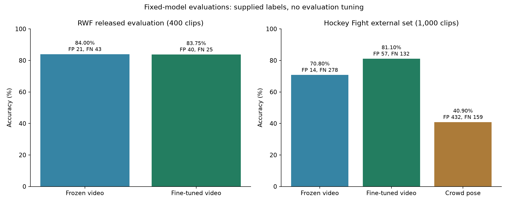

True Positive
Supplied label: 1. Score: 1.000; threshold: 0.23.
15 November 2026 | Local RTX 3050 GPU
The fine-tuned video model is retained by its validation promotion rule: epoch 2 and threshold 0.23. Both evaluation sets use frozen choices. The original frozen-video reference remains the primary model in the predeclared external protocol.
| Evaluation | Model | Accuracy | Macro-F1 | AUC | FP / FN |
|---|---|---|---|---|---|
| RWF (400) | rwf_frozen_video | 84.00% | 0.840 | 0.900 | 21 / 43 |
| RWF (400) | rwf_finetuned_video | 83.75% | 0.837 | 0.929 | 40 / 25 |
| Hockey Fight (1,000) | rwf_frozen_video | 70.80% | 0.686 | 0.886 | 14 / 278 |
| Hockey Fight (1,000) | rwf_finetuned_video | 81.10% | 0.810 | 0.893 | 57 / 132 |
| Hockey Fight (1,000) | crowd_pose_interactions | 40.90% | 0.361 | 0.420 | 432 / 159 |

Independent human label review is pending because no reviewer is currently available. RWF evaluation clips were already inspected. Hockey Fight is a sports-broadcast mirror with 997 unique byte hashes across 1,000 clips, supplied unreviewed labels and unaudited source/pretraining overlap. These results do not establish surveillance deployment reliability.
RWF evaluation | External evaluation | Runbook and commands | Demo verification | Preservation audit | Neutral review pack
Examples were selected after evaluation from each outcome category for explanation. They are not an independent performance sample. All MP4 files decode completely and reproduce their saved model scores.
Supplied label: 1. Score: 1.000; threshold: 0.23.
Supplied label: 0. Score: 0.000; threshold: 0.23.
Supplied label: 0. Score: 1.000; threshold: 0.23.
Supplied label: 1. Score: 0.004; threshold: 0.23.
Whole-clip scores do not attribute violence to individual people. Closed-window inference is available for longer videos; streaming and event-localization accuracy are unvalidated. Paper drafting remains deferred.